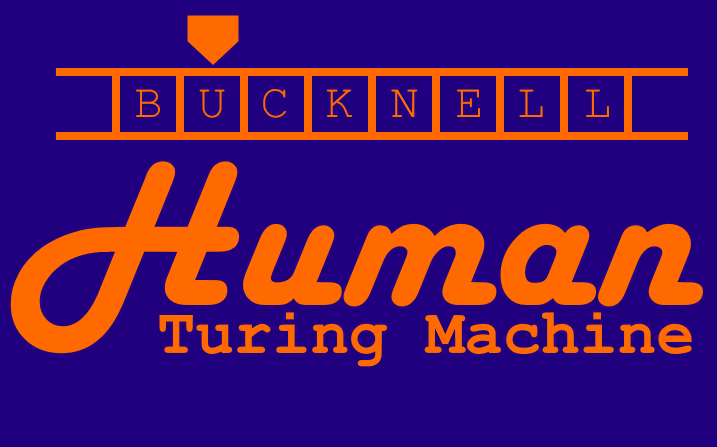

About the Event
Turing Machines model arbitrary computation. As a useful mathematical abstraction, its shadow can be seen in all modern electronic computation. Even so, it can be fun to literally implement a Turing Machine. While Turing Machines can be easily simulated in silica, some individuals have made Turing Machines in more unconventional substrates, e.g. wood, metal, and legos. We seek to contribute one more ludicrous Turing Machine substrate: humans.
In Spring 2019 (date TBD), on Bucknell's campus, dozens of mathematically and computer-scientifically interested individuals will come together on Bucknell's campus to become a Turing Machine, and run some calculations.
To show your interest, please fill out this form [I haven't made the Google Form yet, unfortunately].
World Record
We have applied for a Guinness World Record and are awaiting a response.

Affiliations
This event is being planned by Bucknell's MAA and ACM organizations.